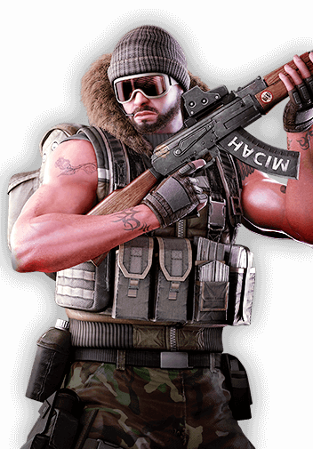

Red Bull
Red Bull is the son of a Corpsman, when peace had seemed to come to their country, his parents encouraged him to study abroad where he made an impact at his university as a star footballer. When he returned home he discovered his parents gone, both killed in an attack by Aegis operatives.
Utilizing his natural athleticism, he began working as a free agent, making small tactical strikes against Aegis Inc operations. He was eventually caught and to be put to death, but during a Corps raid on an Aegis facility, they found and released him. The Corps had known his parents and asked him to stay with them and continue to fight to uphold the old government.
Despite being a footballer, Red Bulls is an enormous man and intimidating to anyone of normal stature. His massive size and seemingly limitless stamina earned him the call sign "Red Bulls" for the giant oxen of yore.